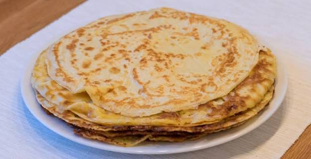
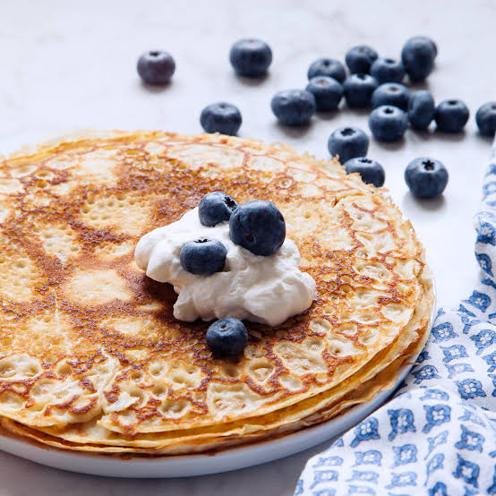
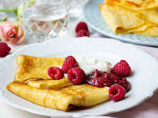

Enkelt recept på pannkakor
Gör traditionella tunna pannkakor med detta enkla och goda recept.
- 4 port
- 30 min
- Lätt
Ingredienser
För 4 portioner
Så här gör du
Serveringsförslag



Gör traditionella tunna pannkakor med detta enkla och goda recept.
För 4 portioner

